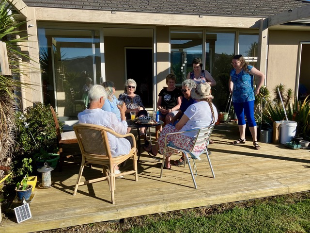
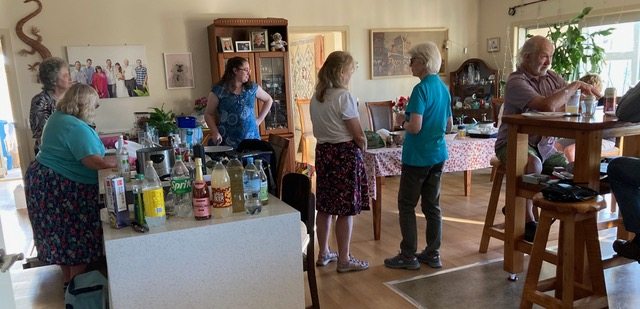
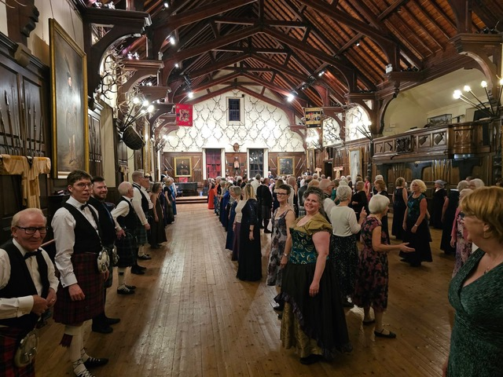
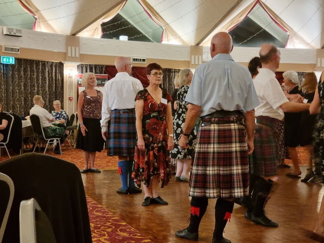
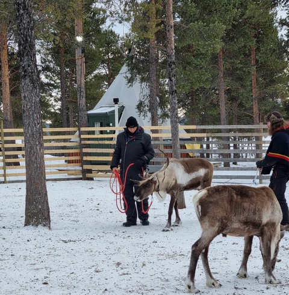
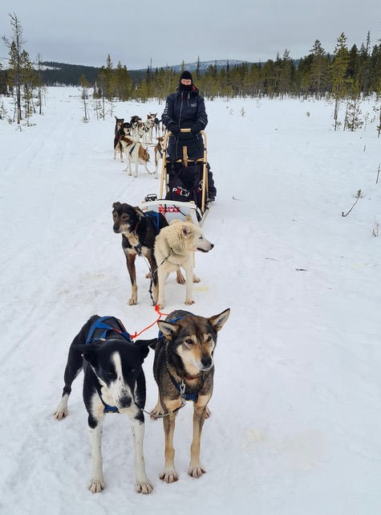

Tawa SCD Club - 27 February 2025
Hello everyone
The new club year is starting next Thursday 6 March, at the usual time (7:30pm) and place (Tawa Bowling Club). I hope everyone is looking forward to coming along! The door will be open by 7:00, as we will have to move the tables out of the way to make room for dancing, so please come a little before our starting time of 7:30. To celebrate our first night, we will have supper (coffee/tea and biscuits), which will allow us to catch up on chat.
I'm told that if it's fine, the Bowling Club members are likely to be bowling - outside of course - so it might be a little harder to get parking right up close, but there is plenty of parking further along.
Money matters
March is the month for members to renew their membership. Here are the details:
Club membership 2025
The annual club membership subscription remains at $25 for 2025.
The subscription goes towards general running costs, funding for Tawa's annual dance, live music nights, and so on.
Membership enables you to vote at the AGM, and on any other official club matters.
** Annual subscriptions are due by the end of March.
Please pay into the Tawa SCD club bank account: 11-7200-0098294-011. Include your name, and "Club Sub" in the appropriate fields.
If you wish to pay your for subscription in cash, please tell Hilary on the night, don't just put the money into the cash box. It makes it easier for her to keep track of payments.
2025 door fees
The weekly door charge remains at $5 per dancing night. There are 2 ways of paying:
- Pay cash ($5) into the cash box each time on arrival at the Bowling Club. OR
- Pay for a "10-trip" ($50) directly into the Tawa SCD club bank account: 11-7200-0098294-011.
Always include your name and "10-trip" in the appropriate fields. The bonus of a "10-trip" is that you get an extra night's dancing for free. It works like a coffee card.
Those of you who have 'trips' left over from 2024 have been notified.
Tawa Club AGM
This will be held on Thursday 3 April. This is a club night, of course, and will happen around 8:00 or 8:30, with supper to follow.
We will be looking for a couple more committee members. If you are interested in joining the committee, please talk to any of the current committee members - Brenda (who will be standing down after 3 years as President), Catherine, Hilary, Jo L, Colin, Caroline, or myself.
Welcome potluck dinner
We had a very enjoyable potluck dinner at Caroline and John Sherborne's home on Saturday 22 February. There were 17 of us, food was plentiful and delicious, conversation flowed very pleasantly, and as a bonus, it was a beautiful, calm day, and people were able to sit outside before dinner. Many thanks to Caroline and John for hosting us. John was due to have surgery on his knee last Wednesday - I hope he is doing well, and we wish him a speedy recovery.


Summer School
I know, it already seems like a long time ago, but here's a chance to look back on the fun. Loralee Hyde wrote a lovely article about Summer School for the Johnsonville Club. Obviously it focuses more on Johnsonville members, but a number of our members are also in the photos. You can find the article here.
Dance Scottish Together
The February 2025 edition of the RSCDS newsletter can be accessed here.
News from the RSCDS Winter School in Pitlochry, Scotland
Three of our members - Duncan and Mary McD, and Joy Tracey - have been attending this Winter School. Joy has posted a number of photos on Facebook on her page "JET Scottish Country Dance" . I love the photo of the ball venue at Blair Castle.

And Mary sent some photos of their trip to Arctic Sweden, after Winter School. They stayed in the ICEHOTEL, and saw the northern lights on a snowmobile trip. Sounds fantastic!

At Pitlochry

Duncan with his reindeer friend, Cloud

Mary and her husky team
Harbour City Happenings
The closing date for this is Saturday 8 March. If you have done anything interesting during the summer break to do with SCD or anything Scottish - e.g. Summer School experiences! - I would love to hear about it. Just write it up and send it to me! I know that there will be an article from Joy and the McDonalds!
That's all for now folks! I look forward to seeing you all at our first club night for the year, next Thursday!
Desiree
Desiree Patterson
tawa@dancesescottish.org.nz
Secretary, Tawa SCD Club
20250222_142316
20250224_121632
480743467_122122140500713209_7728591605183473566_n
IMG_4506
IMG_6598